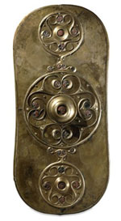

|  |
Later
Bronze Age & Celtic Europe Gallery
This gallery is closed for redevelopment until 2007
This gallery tells the story of the peoples of Britain and Europe
from about 3,600 to 2,000 years ago. These are the periods archaeologists
call the Middle and Late Bronze Age (1600 BC to 750 BC) and the
Iron Age (750 BC to AD 50). The gallery ends with the Roman conquest
of Britain and most of Western Europe.
The 1,600 year period covered by this gallery was one of often dramatic
change. Iron replaced bronze as the main metal to make tools and
weapons. There were changes in religion, art, daily life, economics
and politics. This was a world of farmers and warriors - people
who at the very end of the period were called Britons, Celts, Germans
and Iberians by the Romans and Greeks. Although there were increasing
contact with the civilisations of the Mediterranean world, these
so-called 'barbarian' peoples retained an individual character.
This complex and changing world is illustrated by rich range of
objects, including Bronze Age metalwork, some of the best known
pieces of 'Celtic Art', as well as pots and other day-to-day objects.  floor map floor map
opening hours
|